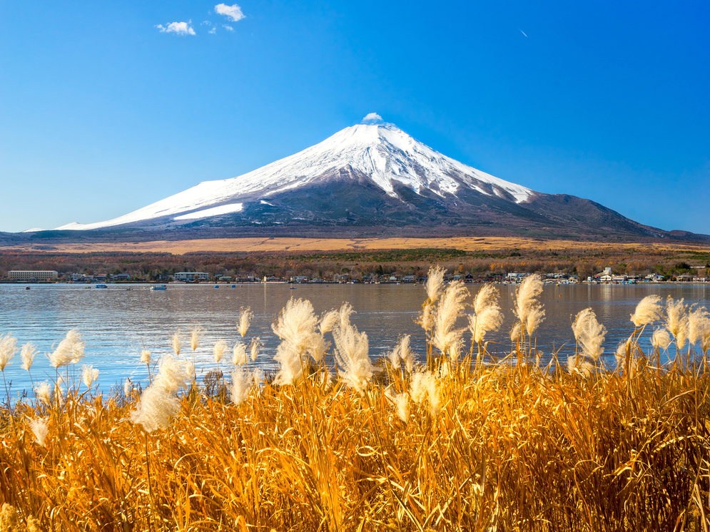

Prato-Passo dello Stelvio
The Stelvio pass is a mountain pass in northen Italy bordering Switzerland. It is the highest paved mountain pass in the eastern alps.
There you will find one of the most picturesque climbs in all of cycling, it is frequently the highest climb at the Giro d'Italia.
Length: 24.1km
Average gradient: 7.6%
Maximum gradient: 11.7%
Col d'Aubisque

The Col d'Aubisque is a mountain pass in the Pyrenees, south of France. It is a climb that is often used in the Tour de France,
it is famous for its brutish nature and was first used in the Tour de France in 1990.
Length: 16.8km
Average gradient: 6.9%
Maximum gradient: 12.6%
Alto de l'Angrliru
If you want a real challenge the Alto de l'Angrliru is a steep mountain road in Asturias, northern Spain. It is considered one of the most demanding climbs in
professional road cycling and is often used in La Vuelta España.
Length: 12.5km
Average gradient: 10.1%
Maximum gradient: 24%
Cuesta del Diablo
On the Carretera Austral highway you'll find this 6km twisty road dropping past the glacier and basalt walls of Cerro Castillo.
Lake Yamanakako
Bask in Mount Fuji's glory during a bike ride around Lake Yamanakako, the largest lake of the Fuji Five Lakes region. It has a 14km
trail dedicated to cycling, offering more peaceful nature and scenic views.
Arakawa Cycling Route
Arakawa Cycling Road runs next to the Arakawa River, which hugs Tokyo along its north and east sides. To the south, it leads to Tokyo Bay,
and to the north, toward Saitama. With over 80 kilometers from one end to the other, you'll find gorgeous parks such as the cherry blossom park, cafes and much more.